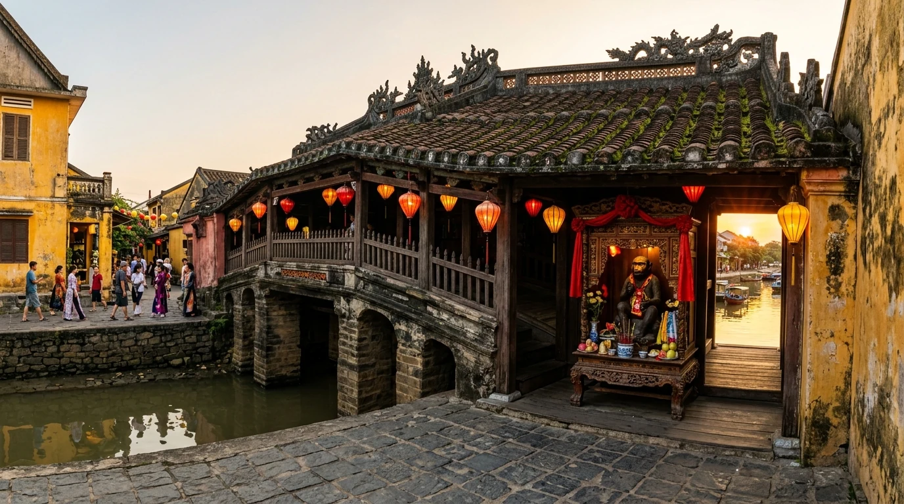

🧭 1. Tổng Quan Chùa Cầu (Lai Viễn Kiều)
Theo sử liệu di sản, cây cầu ban đầu được các thương nhân Nhật Bản góp sức xây dựng vào đầu thế kỷ XVII để kết nối giao thương giữa khu phố Nhật Bản và khu phố người Hoa tại thương cảng Faifo sầm uất. Khoảng năm 1653, cư dân địa phương dựng thêm phần miếu thờ nối liền vào lan can phía Bắc nhô ra giữa cầu, tạo thành chỉnh thể kiến trúc gỗ "thượng gia hạ kiều" (trên là nhà, dưới là cầu) lợp mái ngói âm dương mềm mại. Năm Kỷ Hợi 1719, Chúa Nguyễn Phúc Chu tuần du Hội An, cảm kích trước nhịp cầu gắn kết tình bằng hữu muôn phương nên đã ngự ban ba chữ vàng "Lai Viễn Kiều" (Cầu đón khách phương xa).
Điểm đặc biệt cần lưu ý về mặt tín ngưỡng là dù dân gian quen gọi thân thương là "Chùa Cầu", bên trong gian miếu không thờ Phật mà phụng thờ Bắc Đế Trấn Vũ (Huyền Thiên Trấn Vũ) — vị thần hộ mệnh, trị thủy và chế ngự thiên tai bão lũ trong tín ngưỡng Đạo giáo và dân gian Á Đông (tương truyền gắn với tích trấn yểm thủy quái Cù / Namazu để giữ yên mạch đất). Hai đầu cầu được trấn giữ bởi đôi tượng gỗ Thần Hầu (Khỉ - phía Tây) và Linh Khuyển (Chó - phía Đông), tương truyền ghi dấu niên đại khởi công năm Thân và hoàn thành năm Tuất. Sau đợt đại trùng tu khoa học giai đoạn 2022 – 2024, di tích đã hồi sinh vững chãi mà vẫn giữ trọn hồn cốt gỗ cổ trăm năm.
📜 2. Nghi Thức Hành Lễ & Văn Khấn Cổ Truyền
Chùa Cầu là di tích kiến trúc gỗ cổ đặc biệt quý hiếm của nhân loại. Vì vậy, nghi thức chiêm bái tại đây đề cao tuyệt đối ý thức bảo tồn di sản, phòng chống hỏa hoạn và lòng thành kính thanh tịnh:
🏮 3 Quy Chuẩn Cốt Lõi Khi Hành Lễ Tại Chùa Cầu Hội An
🕯️ Bảo Vệ Tuyệt Đối Kiến Trúc Gỗ 400 Năm
An toàn phòng cháy di sản: Tuân thủ nghiêm hướng dẫn của Ban Quản lý Di sản Hội An, chỉ chắp tay thành tâm hoặc dâng đúng 1 nén hương tại lư hương quy định; tuyệt đối không cắm hương lên kèo gỗ, lan can hay đốt vàng mã.
🗣️ Hiểu Đúng Tín Ngưỡng Thờ Bắc Đế Trấn Vũ
Gian miếu thờ Đức Bắc Đế Trấn Vũ hộ quốc an dân, trị thủy bình an. Khi khấn nguyện, giữ tâm chánh niệm cầu mưa thuận gió hòa, gia đạo bình yên, thượng lộ bình an; không cầu xin mê tín hay nhét tiền lẻ vào khe gỗ.
🪷 Bước Chân Nhẹ Nhàng & Tôn Nghiêm Cổ Vật
Đi nhẹ, nói khẽ trên mặt sàn ván gỗ hình vòm cầu để giảm tải trọng rung chấn cho di tích. Tuyệt đối không sờ chạm, xoa đầu đôi tượng gỗ Thần Hầu – Linh Khuyển trăm tuổi ở hai đầu cầu.
⛩️ 3. Lộ Trình 6 Trạm Di Sản & Chánh Niệm
Lộ trình thiền hành đi bộ tuần tự từ đầu cầu phía Tây (phố Nguyễn Thị Minh Khai) băng qua nhịp cầu ngói âm dương sang đầu cầu phía Đông (phố Trần Phú) và xuôi ra bến sông Hoài:
Hành Trình Thiền Hành Chiêm Bái Chùa Cầu — Lai Viễn Kiều
Đồng hành cùng hành giả tản bộ qua 6 trạm di sản tại Chùa Cầu và bến sông Hoài lịch sử. Tại mỗi trạm, bạn có thể chiêm ngưỡng tinh hoa kiến trúc gỗ 400 năm, chắp tay đảnh lễ Đức Bắc Đế Trấn Vũ, gửi ước nguyện hoa đăng bình an và đọc bài văn khấn cổ truyền chuẩn mực.

Từ đường Nguyễn Thị Minh Khai bước lên đầu cầu phía Tây, du khách bắt gặp đôi khám thờ trang nghiêm tạc tượng Thần Hầu (đôi Khỉ bằng gỗ mít cổ kính) ngồi chầu đối xứng. Tương truyền, đôi tượng Khỉ ở đầu Tây kết hợp cùng đôi tượng Chó ở đầu Đông ghi dấu mốc công trình được khởi dựng vào năm Thân và hoàn thành vào năm Tuất đầu thế kỷ XVII.
🚪 Nghi Thức Hành Lễ & Lối Đi
- Chỉnh sửa trang phục gọn gàng, bỏ mũ nón trước khi bước lên vòm sàn gỗ đầu cầu phía Tây.
- Đứng nép sang một bên khi chiêm ngưỡng khám thờ Thần Hầu để không cản lối đi chung trên cầu hẹp.
- Tuyệt đối không dùng tay xoa đầu tượng gỗ hay đặt tiền lẻ, nhang khói sát hộc khám gỗ cổ.
🙏 Giá Trị Lịch Sử & Tâm Linh
- Đôi tượng Thần Hầu bằng gỗ mít phủ sơn son thếp vàng mang đậm dấu ấn điêu khắc dân gian giao thoa Việt – Nhật.
- Trong tín ngưỡng Á Đông, Thần Hầu còn biểu trưng cho sự minh mẫn, linh hoạt và hộ trì lữ khách qua sông bình an.
- Trước mỗi khám tượng có bày đĩa trầu cau và chén nước thanh tịnh do người dân phố cổ thành tâm chăm sóc hằng ngày.
CHỨNG NHẬN CHIÊM BÁI CHÙA CẦU TRỌN VẸN
Chúc mừng bạn đã hoàn thành trọn vẹn lộ trình chiêm bái 6 trạm di sản tại Chùa Cầu (Lai Viễn Kiều) — trái tim 400 năm của Đô thị cổ Hội An. Nguyện cầu mưa thuận gió hòa, gia đạo an khang, tâm hồn thanh tịnh sáng trong như ánh trăng rằm phố Hội.
🧭 4. Lịch Trình Chiêm Bái 1 Ngày Tối Ưu
Gợi ý lịch trình thong dong 1 ngày kết hợp chiêm bái Chùa Cầu, khám phá không gian văn hóa làng nghề phố Hội và thả hoa đăng cầu an bên dòng sông Hoài:
Buổi Sáng (07h00 - 10h30): Đón Nắng Mai Chùa Cầu & Phố Cổ Tĩnh Lặng
Mua vé tham quan Khu phố cổ Hội An từ sáng sớm khi phố phường còn vắng lặng, trong trẻo. Thực hiện lộ trình chiêm bái 5 trạm từ đầu Tây sang đầu Đông Chùa Cầu (Lai Viễn Kiều), ngắm ánh nắng mai chiếu lên mái ngói âm dương và mặt lạch sông Hoài, sau đó ghé thăm Nhà cổ Tấn Ký và Hội quán Phúc Kiến kế cận.
Buổi Trưa (11h00 - 15h30): Ẩm Thực Xứ Quảng & Làng Nghề Truyền Thống
Thưởng thức các món chay thanh đạm xứ Quảng (mì Quảng chay, cao lầu chay, nước thảo mộc sả chanh) trong ngõ nhỏ rêu phong. Đầu giờ chiều đi thuyền hoặc đạp xe thăm Làng gốm Thanh Hà hoặc Làng mộc Kim Bồng — chính những nghệ nhân mộc Kim Bồng xưa đã góp bàn tay tài hoa trùng tu Chùa Cầu suốt nhiều thế kỷ.
Buổi Chiều & Tối (16h30 - 20h30): Hoàng Hôn Sông Hoài & Thả Hoa Đăng Cầu An
Trở lại bến sông Hoài ngắm Chùa Cầu lên đèn vàng ấm áp phản chiếu lung linh dưới mặt nước lúc hoàng hôn. Lắng nghe hát Bài Chòi dân gian đầu phố và ngồi thuyền gỗ chèo tay thả đóa hoa đăng giấy nhỏ (Trạm 6), khép lại ngày hành hương trong niềm an lạc sâu lắng.